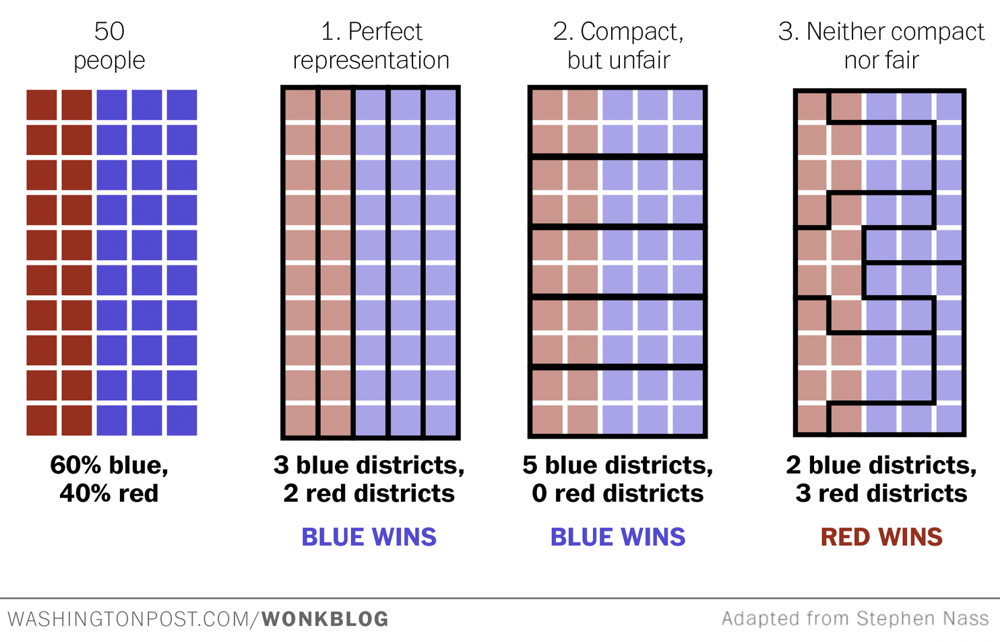

Inspire young professionals to protect the voting rights of racial minorities. This Hackathon will push YPs to learn about redistricting and gerrymandering and propose data and technology-driven solutions that increase public awareness.
Develop an informative way for citizens to learn about redistricting and gerrymandering practices using maps, data, and successful, unsuccessful, and ongoing initiatives. Propose solutions, policies, and movements that will prevent marginalization of our voting rights.
Learn all about redistricting, gerrymandering, and policy.
Form your team meeting leaders in the community, and pitch your ideas while networking with TN.
Full day to form your groups and start working on ideas, solutions, and proposals to pitch to the judges.
The Iron Yard Washington DC
1341 G Street, NW
Floor 2
Washington, D.C., 20005
Nearest Metro Stations:
McPherson Square
Metro Center
Redistricting is the process of redrawing district boundaries, and generally occurs when a state has more congressional representatives than districts. State representatives have 2 to 4- year terms, and the number of representatives per state increases with the increase of a state's population. Redistricting, however, only occurs every ten years alongside the national census. The next national census is in 2020.
Historically, the majority political party in the state legislature has used gerrymandering to influence the next ten years of electoral votes. Districts redrawn on the state level then affect which federal party representatives come into power.
The diagram below illustrates three ways of redistricting to control the outcome.
Every ten years, following the national census, city council, state legislature and congressional district boundaries must be redrawn to reflect the nation’s shifting population. The way district boundaries are drawn after the national census affects the composure of the state and federal legislatures for multiple election cycles. It is critically important that districts are drawn to maximize fair community representation.
Do you know who draws the lines of your district and how this will affect your next election, the school system our children will belong to, or the interests of the community you live in? Do you know what options you have under the current rules – and how to change them?
Redistricting mostly takes place behind closed doors. Legislators and political consultants decide which streets or neighborhoods are in or out, specialists make the maps, and the public has little opportunity to weigh in. This opacity allows for districts to be drawn for political gain. We believe that this should change – that this process should be more transparent. We believe that by leveraging technology, citizens can be more involved.
Bring a laptop (a mouse is optional) - PC, Mac, Linux, etc. While PC Desktops are strongly discouraged, they are also not prohibited. We will also be providing food and beverages as refreshment.
Yes! Part of the fun is learning how to program when working with other people. We will also try to provide some great workshops that you can attend. Or you can always just hang out and have fun!
This event is 100% FREE! Yes - zero dollars. We want this to be an event that welcomes everyone, regardless of cost.
You must be at least be in high school - age 14 (we may ask to see a recent School ID of yourself). For younger participants, we ask that you be accompany by a parent or legal guardian.
No! In fact, most people don't come with a team! At the beginning of the event, everyone will pitch ideas for what they want to build. You can form a team then.
We ask that you check out our Code of Conduct (please read through it). If you believe that something in there is missing which may be applicable to you or others, please let us know.
For all inquiries - media and otherwise - please contact the following information listed below:
Greater Washington Urban League (Thursday Network)
2901 14th Street, NW
Washington, D.C., 20024
To find out about sponsoring this event or making a donation, please reach out to Amy Lee Walton, the Personal and Professional Development chair of Thursday Network and Program Manager of this event at